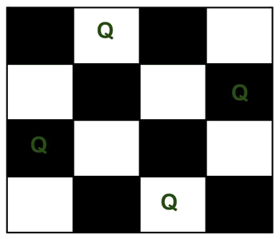

N皇后问题
N 皇后问题源自国际象棋，所有棋子中权力最大的称为皇后，它可以直着走、横着走、斜着走（沿 45 度角），可以攻击移动途中遇到的任何棋子。N 皇后问题的具体内容是：如何将 N 个皇后摆放在 N*N 的棋盘中，使它们无法相互攻击。
举个简单的例子，将 4 个皇后摆放在 4*4 的棋盘中，下图给出了一种摆放方式，各个皇后无论是直着走、横着走还是斜着走，都无法相互攻击。
回溯算法解决N皇后问题的具体思路是：将 N 个皇后逐一放置在不同的行，以“回溯”的方式逐一测试出每行皇后所在行的具体位置，最终确定所有皇后的位置。
如下为回溯算法解决 N 皇后问题的伪代码：
借助伪代码，如下是解决N皇后问题的 C 语言程序：
如下为解决 N 皇后问题的 Java 程序：
如下为解决 N 皇后问题的 Python 程序：
假设皇后的总个数为 4，以上程序的输出结果均为：
举个简单的例子，将 4 个皇后摆放在 4*4 的棋盘中，下图给出了一种摆放方式，各个皇后无论是直着走、横着走还是斜着走，都无法相互攻击。

图 1 N 皇后问题
图 1 N 皇后问题
N 皇后问题可以用回溯算法解决，接下来就为您讲解具体的解决思路。Q 表示放置皇后的位置。
回溯算法解决N皇后问题
要想使 N 个皇后不相互攻击，应将它们放置在不同的行、不同的列、还不能位于同一条 45°（或 135°）角的斜线上。回溯算法解决N皇后问题的具体思路是：将 N 个皇后逐一放置在不同的行，以“回溯”的方式逐一测试出每行皇后所在行的具体位置，最终确定所有皇后的位置。
如下为回溯算法解决 N 皇后问题的伪代码：
输入 N // 输入皇后的个数
q[1...N] //存储每行的皇后的具体位置（列标）
n_queens(k , n): // 确定第 k 行皇后的位置
if k > n: // 递归的出口
Print q // 输出各个皇后的位置
else:
for j <- 1 to n: // 从第 k 行第 1 列开始，判断各个位置是否可行
if isSafe(k , j): // 如果可行，继续判断下一行
q[k] <- j // 将第 k 行皇后放置的位置 j 记录下来
n_queens(k+1 , n) // 继续判断下一行皇后的位置
借助伪代码，如下是解决N皇后问题的 C 语言程序：
#include <stdio.h>
#define N 20 //皇后的数量
int q[N]; //各行皇后所在的列
int count = 0; //统计N皇后问题解的个数
//输出 N 皇后问题的解决方案
void print(int n)
{
int i, j;
count++;
printf("第%d个解：\n", count);
for (i = 1; i <= n; i++) //行
{
for (j = 1; j <= n; j++) //列
{
if (q[i] != j)
printf("x");
else
printf("Q");
}
printf("\n");
}
printf("\n");
}
//检验第k行第j列上是否可以摆放皇后
int isSafe(int k, int j)
{
int i;
for (i = 1; i < k; i++) {
//如果有其它皇后位置同一列上，或者位于该位置的斜线位置上，则该位置无法使用
if (q[i] == j || abs(i - k) == abs(q[i] - j))
return 0;
}
return 1;
}
//放置皇后到棋盘上
void n_queens(int k, int n)
{
int j;
if (k > n) //递归的出口
print(n);
else
{
for (j = 1; j <= n; j++) //试探第k行的每一列，找到符合要求的列
{
if (isSafe(k, j))
{
q[k] = j;
n_queens(k + 1, n); //在确认第 k 行皇后位置的前提下，继续测试下一行皇后的位置
}
}
}
}
int main()
{
int n;
printf("请输入皇后个数：");
scanf("%d", &n);
n_queens(1, n);
printf("共有 %d 种不同的排列", count);
return 0;
}
如下为解决 N 皇后问题的 Java 程序：
import java.util.Scanner;
public class Demo {
static int[] q = new int[20];
static int count = 0;
public static void n_queens(int k, int n) {
int j;
if (k > n)
print(n);
else {
for (j = 1; j <= n; j++) // 试探第k行的每一列，找到符合要求的列
{
if (isSafe(k, j)) {
q[k] = j;
n_queens(k + 1, n); // 在确认第 k 行皇后位置的前提下，继续测试下一行皇后的位置
}
}
}
}
public static boolean isSafe(int k, int j) {
int i;
for (i = 1; i < k; i++) {
// 如果有其它皇后位置同一列上，或者位于该位置的斜线位置上，则该位置无法使用
if (q[i] == j || Math.abs(i - k) == Math.abs(q[i] - j))
return false;
}
return true;
}
// 输出 N 皇后问题的解决方案
public static void print(int n) {
int i, j;
count++;
System.out.println("第 " + count + " 个解：");
for (i = 1; i <= n; i++) // 行
{
for (j = 1; j <= n; j++) // 列
{
if (q[i] != j)
System.out.print("x");
else
System.out.print("Q");
}
System.out.println();
}
System.out.println();
}
public static void main(String[] args) {
System.out.println("请输入皇后个数：");
Scanner sc = new Scanner(System.in);
int n = sc.nextInt();
n_queens(1, n);
System.out.println("共有 " + count + " 种摆放方式");
}
}
如下为解决 N 皇后问题的 Python 程序：
count = 0 #统计解决方案的个数
q = [0]*20 #记录各个皇后的放置位置，最多放置 20 个皇后
#输出 N 皇后问题的解决方案
def display(n):
global count
count = count + 1
print("输出第%d个解：" % (count))
for i in range(1 , n + 1):
for j in range(1 , n + 1):
if q[i] != j:
print("x",end=" ");
else:
print("Q",end=" ");
print()
print()
#检验第k行的第j列是否可以摆放皇后
def isSafe(k , j):
for i in range(1 , k):
#如果有其它皇后位置同一列上，或者位于该位置的斜线位置上，则该位置无法使用
if q[i] == j or abs(i - k) == abs(q[i] - j):
return False
return True
#放置皇后到棋盘上
def n_queens(k , n):
if k > n: #递归的出口
display(n)
else:
for j in range(1 , n + 1): #试探第k行的每一列，找到符合要求的列
if isSafe(k , j):
q[k] = j
n_queens(k + 1 , n); #在确认第 k 行皇后位置的前提下，继续测试下一行皇后的位置
print("请输入皇后个数：")
n = int(input());
n_queens(1,n)
print("共有 %d 种不同的排列" % (count))
假设皇后的总个数为 4，以上程序的输出结果均为：
请输入皇后个数：
4
输出第1个解：
x Q x x
x x x Q
Q x x x
x x Q x
输出第2个解：
x x Q x
Q x x x
x x x Q
x Q x x
共有 2 种不同的排列
关注公众号「站长严长生」，在手机上阅读所有教程，随时随地都能学习。本公众号由C语言中文网站长亲自运营，长期更新，坚持原创。

微信扫码关注公众号